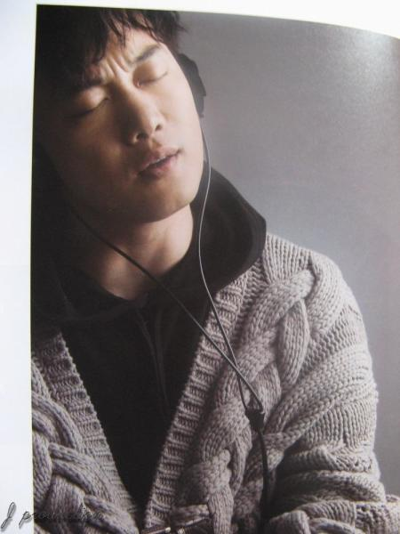
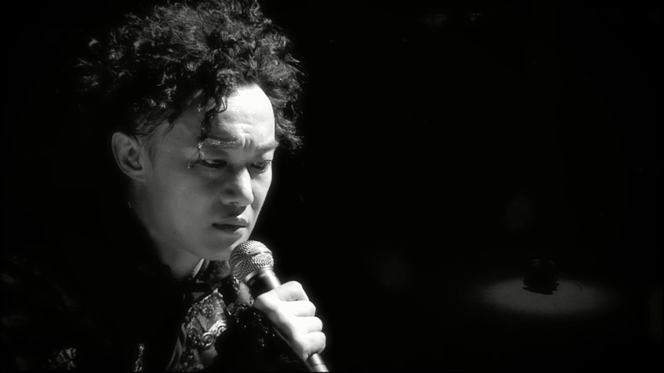

于心有愧
《于心有愧》是香港流行男歌手陈奕迅的一首粤语歌曲，由林夕作词 ，钟达茵作曲，唐奕聪编曲，陈奕迅演唱。
收录于专辑《H3M》中，发行于2009年03月23日。
2010年1月23日，该曲获得MY Astro至尊流行榜颁奖典礼2009“至尊年度大奖”和“至尊金曲”两项奖项。
于心有愧十年
浑厚塌实的嗓音要是遇见痛彻心扉的歌词和深沉委婉的曲，那简直一种让人无法逃避的毒。
人是会变的，变的自己也不认识自己了，而这个过程正好是十年。这个十年，寄托了太多太多的遐想，恩仇，苦涩，遗憾，留恋，回忆……甚至痛苦！
十年我的快乐时代
让我对这世界好奇，让我信自己的真理。
让我有个美满旅程，让我有勇气去喊停。
无人之境
让理智在叫着冷静冷静 还恃住年少气盛。
让我对着冲动背着宿命 浑忘自己的姓。
